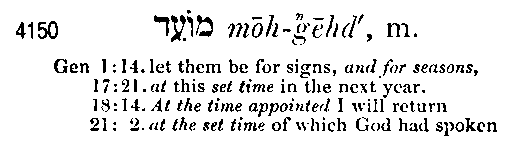

Rev 16:13 And I saw three unclean spirits like frogs come out of the mouth of the dragon, and out of the mouth of the beast, and out of the mouth of the false prophet.
Rev 16:14 For they are the spirits of devils, working miracles, which go forth unto the kings of the earth and of the whole world, to gather them to the battle of that great day of God Almighty.
Rev 16:15 Behold, I come as a thief. Blessed is he that watcheth, and keepeth his garments, lest he walk naked, and they see his shame.
Rev 16:16 And he gathered them together into a place called in the Hebrew tongue Armageddon.
Curiously, no place on earth bears the name of Armageddon, and the above passage is the only mention of it in scripture. The Greek is most commonly thought to be a transliteration of the Hebrew har megiddo, literally, "mountain of Megiddo." Here is what Strong's has to say about the word:
G717. Armageddon, ar-mag-ed-dohn'; of Heb. or [H2022 and H4023]; Armageddon (or Har-Megiddon), a symbol. name:--Armageddon.
Strong's proposes that the Greek word Armageddon originates from the two following Hebrew words:
H2022. har, har; a short. form of H2042; a mountain or range of hills (sometimes used fig.):--hill (country), mount (-ain), X promotion.
H4023. Megiddown, (Zec 12:11), meg-id-done'; or Megiddow, meg-id-do'; from H1413; rendezvous; Megiddon or Megiddo, a place in Pal.:--Megiddo, Megiddon.
The Mount of Megiddo is located in the plain of Esdraelon or Jezreel, a valley fourteen by twenty miles in size located to the southwest of Nazareth. Here, it is thought by many, a great final battle will be fought at the end of time.
But there is another possible Hebrew origin for the word Armageddon that is less well known. The clue is in the book of Isaiah:
Isa 14:12 How art thou fallen from heaven, O Lucifer, son of the morning! how art thou cut down to the ground, which didst weaken the nations!
Isa 14:13 For thou hast said in thine heart, I will ascend into heaven, I will exalt my throne above the stars of God: I will sit also upon the mount of the congregation, in the sides of the north:
Isa 14:14 I will ascend above the heights of the clouds; I will be like the most High.
The phrase "mount of the congregation" in the Hebrew is har mow'ed. The word "har" again means mountain, and "mow'ed" is defined in Strong's as follows:
H4150. mow'ed, mo-ade'; or mo'ed mo-ade'; or (fem.) mow'adah (H2 Chron. 8 : 13), mo-aw-daw'; from H3259; prop. an appointment, i.e. a fixed time or season; spec. a festival; conventionally a year; by implication, an assembly (as convened for a definite purpose); technically the congregation; by extension, the place of meeting; also a signal (as appointed beforehand):--appointed (sign, time), (place of, solemn) assembly, congregation, (set, solemn) feast, (appointed, due) season, solemn (-ity), synagogue, (set) time (appointed).
A parallel is apparent here between the gathering at "Armageddon"
and Satan claiming that he will assume authority on the "mount of the
congregation" and be like the most High God. The word mow'ed is commonly
used to describe the traveling Hebrew Tabernacle.
See  The
Hebrew Sanctuary.
The
Hebrew Sanctuary.
Here are examples of where the word translated as congregation is mow'ed:
Exo 27:21 In the tabernacle of the congregation [mow'ed] without the veil, which is before the testimony, Aaron and his sons shall order it from evening to morning before the LORD: it shall be a statute for ever unto their generations on the behalf of the children of Israel.
Exo 33:7 And Moses took the tabernacle, and pitched it without the camp, afar off from the camp, and called it the Tabernacle of the congregation [mow'ed].
Note that Satan also claimed in Isaiah that he would "sit also upon
the mount of the congregation, in the sides of the north". This is a
reference to Mount Moriah, the site of the Temple of God in Jerusalem, which
was just to the north of the city of David. The Temple was the final location
of the tabernacle of the congregation (mow'ed), the place of the appointed
times (mow'ed) of congregation where the people of Israel assembled on God's
appointed times or Sabbath festivals to worship and sacrifice to the Lord. The
word mow'ed is also used for appointed or set times in the Old Testament.
See  The
Biblical Feast Days.
The
Biblical Feast Days.
Now, interestingly enough, in George Wigram's Englishman's Hebrew and Chaldee Concordance of the Old Testament of 1874, republished by Hendrickson Publishers, Inc. in 1996, ISBN 1-56563-208-7, page 672, the word mow'ed is spelled and pronounced a little differently. He shows it as:

Mount of the congregation in Isaiah 14:13 would then be har moh-gehd.
So the controversy between God and Satan, the battle of Armageddon, is over who will have authority over the mount of the congregation, the har moh-gehd, the place of appointed times and seasons for the people of God. Satan's stated goal (Isa 14:13) is to gain control there and be like God. Note that the little horn of Daniel (the AntiChrist) is prophesied to attempt the same goal:
Dan 7:25 And he shall speak great words against the most High, and shall wear out the saints of the most High, and think to change times and laws [of the most high]: and they shall be given into his hand until a time and times and the dividing of time.
Note the bracketed portion I have added. In context, the times and laws the little horn would think to change are the times and laws of God. This is referring to the mow'ed, the appointed times of God as related to the mount of the congregation and the Temple of God. This would indicate that the battle of Armageddon is not the location of a physical battle near Meggido, rather it is the focus or reason behind the spiritual battle between God and Satan, that being a conflict over the authority to appoint holy times of congregation.
Today, some two millennia after the beginning of Christianity, not a single day appointed by God is kept or observed in the vast majority of Christian Churches, at least not on the day God specified:
The weekly Sabbath of the Lord is the Seventh-day, Saturday, yet the majority of Christians have abandoned the Lord's Sabbath and observe the first day of the week. Sunday has no scriptural command or authority to commend it as a replacement for the Sabbath. Sunday worship is commanded only by the Catholic Church, which claims the authority to change the times and laws of God by transferring the observance of God's sabbath from the seventh day of the week to the first.
See  Sunday is not the Sabbath.
Sunday is not the Sabbath.
 Rome's Challenge - Why Do Protestants Keep Sunday?
Rome's Challenge - Why Do Protestants Keep Sunday?
 The
Seal of God and the Mark of the Beast.
The
Seal of God and the Mark of the Beast.
Christmas, which celebrates the birth of Jesus on December 25th, is not
mentioned in scripture as a day that should be observed, and was completely
unknown to the apostles.
See  Celebrating the Birth of the Sun.
Celebrating the Birth of the Sun.
Lent, a period of 40 days prior to Easter, has no Biblical precedent as a
Christian festival, either in the New Testament or the Old.
See  The
40 Days of weeping for Tammuz.
The
40 Days of weeping for Tammuz.
Easter, which bears a pagan name, is to commemorate the crucifixion and
resurrection of Jesus, but scripture specifies that Passover, the day of the
crucifixion, always happens on the 14th of the Jewish month of Nisan,
which varies as to the day of the week it occurs on. Christians in general,
always observe a Good Friday and Easter Sunday. And Pentecost, as it is tied
to Passover, will also vary as to the day of the week it occurs on, according
to the biblical formula, yet Christianity in general observes it on a Sunday
(Whitsunday).
See  Celebrating the Risen Sun.
Celebrating the Risen Sun.
Catholicism in particular has added a number of unbiblical "days of obligation" in addition to Christmas, Easter and all Sundays, which are required to be kept as holy days of mandatory church attendance. The list varies somewhat between Eastern and Western Catholicism and by country. Some of these obligatory days are:
January 1st - solemnity of Mary, Mother of God (if Saturday or Monday, not
observed as holy day of
obligation).
January 6th - solemnity of Epiphany (or first Sunday following January 1st).
March 19th - solemnity of St. Joseph, husband of Mary.
Ascension Day - 40 days after Easter.
Thursday after Trinity Sunday - solemnity of Corpus Christi - (or second
Sunday following Pentecost).
June 29th - solemnity of Sts. Peter and Paul.
August 15th - The solemnity of the Assumption of the Blessed Virgin Mary (if
Saturday or Monday, not observed as holy day of obligation).
November 1st - solemnity of All Saints Day (if Saturday or Monday, not
observed as holy day of obligation).
December 8th - solemnity of the Immaculate Conception of the Blessed Virgin
Mary.
See  The
Feast of the Immaculate Conception.
The
Feast of the Immaculate Conception.
Here is a web page that lists the  General
Roman Calendar of Solemnities, Feasts and Memorials at the
Catholic site Et Cum Spiritu Tuo.
General
Roman Calendar of Solemnities, Feasts and Memorials at the
Catholic site Et Cum Spiritu Tuo.
So, much of Christianity has been directed to keep a calendar of invented holy days of tradition which scripture does not command, in what amounts to substitution for the appointed times of God. There is an axiom that applies here: For every good thing from God, Satan has a counterfeit. If this axiom sounds like it makes sense to you, then I ask you, what are Satan's counterfeit days of worship and how do you recognize them? Which days are still to be observed because God commands them? That after all, as shown above, appears to be the crux of the controversy between God and Satan and the focus of the battle of Armageddon.